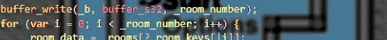

Synthasmablogia
Contact
Email:
jarklu [at] protonmail [dot] com
Videos
GMS1 Compiler optimization hacking
P2 Technical commentary

Bringing Godot-like signals to GameMaker
Articles
Error handling in GM (2026.05.10)
Materials in GM (2026.05.20)